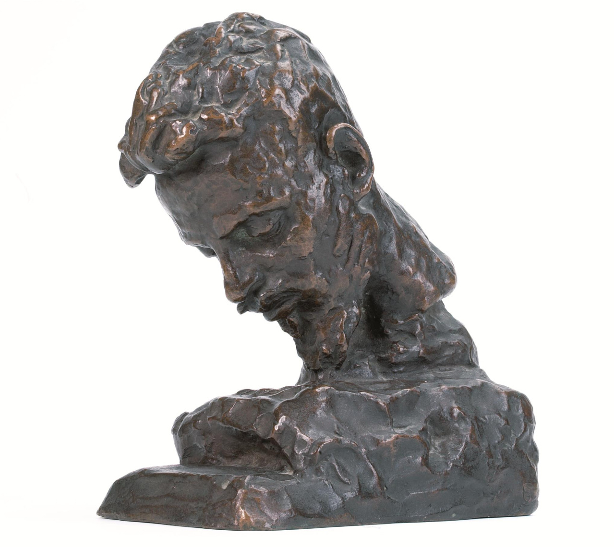

Portrety Rilkego
Clara Rilke-Westhoff 1905
„Dzieła sztuki są zawsze owocem życia w zagrożeniu, wynikiem podążania za doświadczeniem aż do ostatecznego końca”.
W roku 1905 Rilke przebywa w gościnie u hrabiny Luise von Schwerin, z domu Nordeck zur Rabenau, która zaprosiła poetę i jego żonę Clarę do swej rodowej siedziby Friedelhausen w Hesji. Na tamtejszym zamkowym tarasie Clara modelowała wówczas popiersie pogrążonego w lekturze męża.
Ukończone popiersie Rilkego, wykonane przez Clarę Rilke-Westhoff, rok 1905